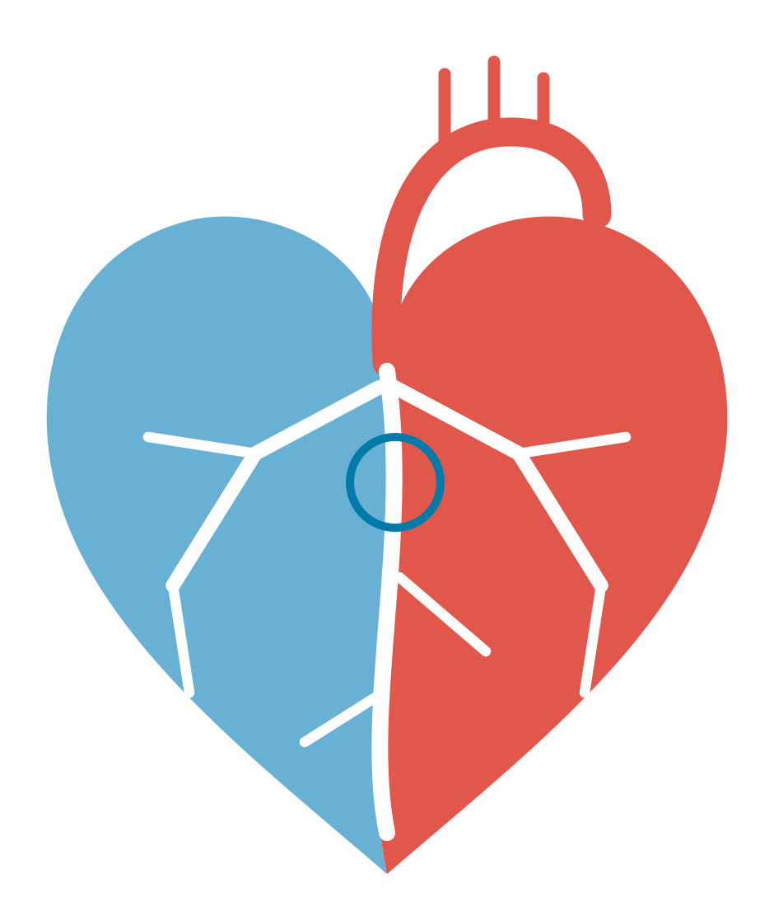

CT-Diagnostik · Herz-CT (Kardio-CT)
Patienten-Laufzettel

Radiologie Dammtor · Dammtorwall 7a · 20354 HamburgTelefon 040 3500484-0info@radiologie-dammtor.de
Für ein scharfes und strahlungsarmes Herz-CT ist eine ruhige Herzfrequenz (unter 60–65 Schläge pro Minute) entscheidend. Bitte kommen Sie nicht mit dem eigenen Auto: Nach Betablocker und Nitrospray dürfen Sie nicht selbst fahren.
Bitte unbedingt aktuelle Blutwerte (Kreatinin und TSH) zur Untersuchung mitbringen.
1Von der überweisenden Praxis auszufüllen
Ja, Betablocker rezeptiert / mitgegeben: 1 Tablette Metoprolol 50 mg ca. 2 Stunden vor dem Termin.
Nein, Kontraindikation vorhanden (z. B. AV-Block II°/III°, schweres Asthma bronchiale, akute Herzinsuffizienz)
2Vorbereitung am Untersuchungstag (zu Hause)
Betablocker (Metoprolol 50 mg)
Wenn von Ihrer Praxis verordnet: 1 Tablette ca. 2 Stunden vor Ihrem Termin mit etwas Wasser einnehmen. Nehmen Sie bereits regelmäßig einen Betablocker, halten Sie bitte Rücksprache mit Ihrer Ärztin oder Ihrem Arzt.
Kein Koffein, kein Nikotin
Am Tag der Untersuchung, mindestens 12 Stunden vorher: kein Kaffee, keine Cola, keine Energy-Drinks, kein schwarzer oder grüner Tee, nicht rauchen. Koffein und Nikotin beschleunigen den Puls.
Essen und Trinken
Sie müssen nicht streng nüchtern sein. Vermeiden Sie schweres Essen unmittelbar vor dem Termin und trinken Sie ausreichend stilles Wasser.
3Ablauf in der Radiologie Dammtor Dauer insgesamt ca. 1,5–2 Stunden
Ankunft
Anmeldung, Abgabe dieses Laufzettels, der Laborwerte und des Aufklärungsbogens
Puls-Check
EKG und Blutdruckmessung, bei Bedarf weiterer Betablocker; kurz vor der Untersuchung Nitrospray
Herz-CT
Venenzugang; die Aufnahme selbst dauert nur wenige Sekunden
Abschluss
Kurze Nachbeobachtung, danach können Sie nach Hause gehen
4Bitte mitbringen
Diesen ausgefüllten Laufzettel
Aktuelle Laborwerte (Kreatinin/eGFR, TSH)
Aktuellen Medikamentenplan
Vorbefunde (EKG, Herzultraschall, Herzkatheter)
Überweisung und Versichertenkarte
Ausgefüllten Aufklärungsbogen